Contents
Starting an Orbit from Numerical Data (Demo : lor)
This demo illustrates how to start the computation of a family of periodic solutions from numerical data obtained, for example, from an initial value solver. As an illustrative application we consider the Lorenz equations
: 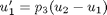,
: 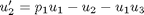,
:  .
.
Numerical simulations with a simple initial value solver show the existence of a stable periodic orbit when 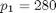, 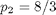, 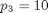. Numerical data representing one complete periodic oscillation are contained in the file lor.dat and then placed in the f8 object.
clear all
Starting data
Numerical data representing one complete periodic oscillation are contained in the file lor.dat. Each row in lor.dat contains four real numbers, namely, the time variable t, u1, u2 and u3. These values can also be obtained from a simulation and then placed in the f8 object. The correponding parameter values are defined in a{1}.s.Par0. The constant a{1}.c.Ips then allows for using the data in lor.dat where we also specify a{1}.c.Irs=0. The mesh will be suitably adapted to the solution, using the number of mesh intervals a{1}.c.Ntst and the number of collocation point per mesh interval a{1}.c.Ncol specified in the constants-file clor1.m.
dat=textread('lor.dat');
Compute a solution family, restart from lor.dat
Create first object
a{1}=auto;
a{1}.c=clor1(a{1}.c);
a{1}.s.Par0=[280,8/3,10];
% Populate f8 object with data from text file
a{1}=dat2f8(a{1},dat);
% First run
a{1}=runauto(a{1});
--------------- DYNAMICAL SYSTEMS TOOLBOX ---------------------
USER NAME : ECOETZEE
DATE : 26/10/2010 10:16:26
<
BR PT TY LAB PAR(01) INTEGRAL U(01) MAX U(01) MAX U(02) MAX U(03) PERIOD
1 18 PD 2 2.29407E+02 -1.06862E+00 3.65050E+01 6.67239E+01 3.06557E+02 4.80867E-01
1 21 EP 3 1.85022E+02 -1.31178E+00 3.18654E+01 5.70012E+01 2.57568E+02 5.39124E-01
Total Time 0.152E+01
>
Plot the phase plane of the limit cycles with labels 2 and 3
p=plautobj; set(p,'lcLab',[2,3],'xEqStr','U(1)','xLab','U(1)','yEqStr','U(2)','yLab','U(2)'); plotlcph(p,a{1}); snapnow; close(gcf);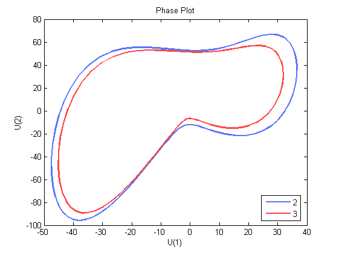
Plot the response against the normalised period
plotlcpr(p,a); snapnow; close(gcf);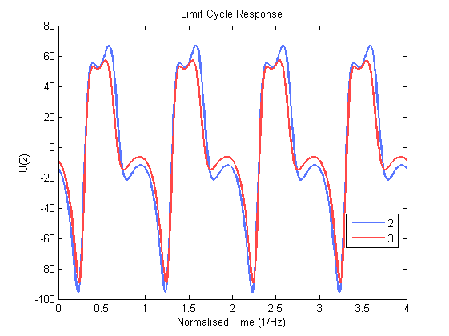
Switch branches at a period-doubling detected in the first run
Create second object
a{2}=a{1};
a{2}.c=copy(a{1}.c);
a{2}.c=clor2(a{2}.c);
a{2}=runauto(a{2});
--------------- DYNAMICAL SYSTEMS TOOLBOX ---------------------
USER NAME : ECOETZEE
DATE : 26/10/2010 10:16:31
<
BR PT TY LAB PAR(01) INTEGRAL U(01) MAX U(01) MAX U(02) MAX U(03) PERIOD
2 22 PD 4 2.18210E+02 -1.05589E+00 3.58675E+01 6.61411E+01 2.99070E+02 9.87949E-01
2 28 EP 5 1.95159E+02 -1.02809E+00 3.41320E+01 6.26942E+01 2.75063E+02 1.04981E+00
Total Time 0.409E+01
>
Plot the phase plane of the limit cycles with labels 4 and 5
set(p,'lcLab',[4,5],'xEqStr','U(1)','xLab','U(1)','yEqStr','U(2)','yLab','U(2)'); plotlcph(p,a{2}); snapnow; close(gcf);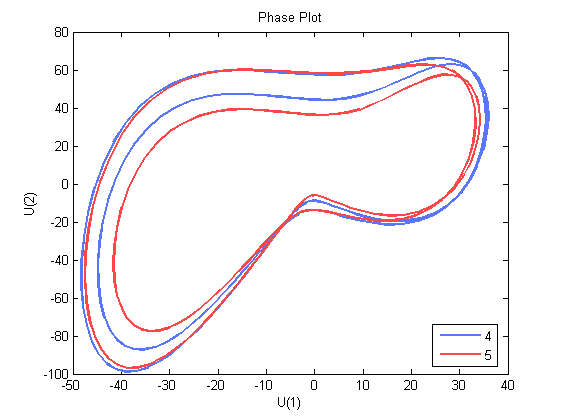
Plot the response against the normalised period
plotlcpr(p,a{2});
snapnow;
close(gcf);
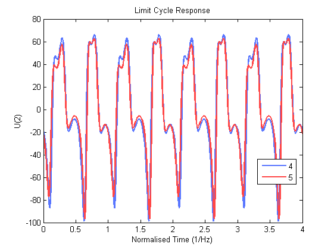 Switch branches at a period-doubling detected in the second run
Create third object
a{3}=a{2};
a{3}.c=copy(a{1}.c);
a{3}.c=clor3(a{2}.c);
a{3}=runauto(a{3});
--------------- DYNAMICAL SYSTEMS TOOLBOX ---------------------
USER NAME : ECOETZEE
DATE : 26/10/2010 10:16:37
<
BR PT TY LAB PAR(01) INTEGRAL U(01) MAX U(01) MAX U(02) MAX U(03) PERIOD
3 14 PD 6 2.15966E+02 -1.06184E+00 3.58660E+01 6.63158E+01 2.97685E+02 1.98675E+00
3 24 EP 7 1.99563E+02 -1.10541E+00 3.47361E+01 6.39048E+01 2.80640E+02 2.07247E+00
Total Time 0.520E+01
>
Plot the phase plane of the limit cycles with labels 6 and 7
set(p,'lcLab',[6,7],'xEqStr','U(1)','xLab','U(1)','yEqStr','U(2)','yLab','U(2)'); plotlcph(p,a{3}); snapnow; close(gcf);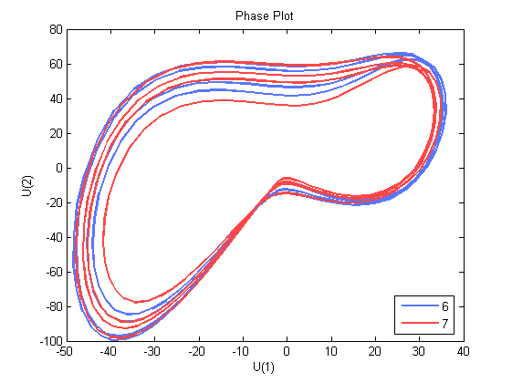
Plot the response against the normalised period
plotlcpr(p,a{3});
snapnow;
close(gcf);
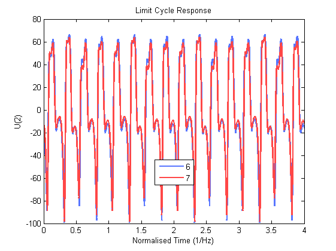